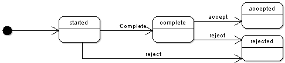

public interface SessionInteraction
The overall development process is as follows:
module.xml, in particular its input and output parameters.Session.getInteraction.For more information, see Parameters declaration and availability in workflows and perspectives.
The following diagram shows the states of an interaction:
When a user starts a work item:
session is created on the application server
with an underlying interaction;input parameters are assigned values according
to the mapping specified by the user task definition in the workflow model.As long as the interaction is in the 'started' state, it means that the user has some work to perform.
When the interaction is considered to be complete the user service must invoke the method
complete
(this method can be invoked at the first HTTP request, if the interaction does not require any particular work).
Then, from the 'complete' state, the user can either
accept or reject it. It is possible to specify particular checks on
these actions by means of the method UserTask.checkBeforeWorkItemCompletion.
Note: by default, 'Reject' is disabled (the button is not displayed); in the workflow model, it can be enabled in the user task definition.
The session interaction is persistent, thus if the user closes the browser or logs out, or if the server is restarted, the last saved state can be used by a user service to correctly restore the same position when the user returns to the work item.
If a user service is composed of more than one simple step, it is recommended to use the appropriate methods to save the state at the end of each step and to retrieve this state in the first HTTP request if the work item is continued later. It is important for User services that are integrated with workflows to always use session interactions.
com.orchestranetworks.workflow,
Parameters
declaration and availability in workflows and perspectives| Modifier and Type | Interface and Description |
|---|---|
static interface |
SessionInteraction.DecisionResult
Contains the report of a decision request (accept or reject).
|
static interface |
SessionInteraction.Specification
Gives information about the specification of the interaction.
|
| Modifier and Type | Method and Description |
|---|---|
SessionInteraction.DecisionResult |
accept()
Requests the interaction to be accepted and returns whether the operation
has succeeded or not.
|
void |
complete(InteractionHelper.ParametersMap outputParameters)
Sets this interaction to the state 'complete'.
|
String |
getComment()
Returns the comment of this interaction.
|
InteractionHelper.ParametersMap |
getInputParameters()
Returns the initial input parameters of this interaction.
|
InteractionHelper.ParametersMap |
getInternalParameters()
Returns the internals parameters of this interaction.
|
ServiceKey |
getServiceKey()
Returns the service key of this interaction.
|
SessionInteraction.Specification |
getSpecification()
Returns the specification of the interaction given by the associated
definition.
|
WorkItemKey |
getWorkItemKey()
Returns the work item key associated to the current session interaction.
|
boolean |
isComplete()
Returns
true if this interaction has been set to 'complete'. |
SessionInteraction.DecisionResult |
reject()
Requests the interaction to be rejected and returns whether the operation
has succeeded.
|
void |
setComment(String comment)
Sets the comment of this interaction.
|
void |
setInternalParameters(InteractionHelper.ParametersMap internalParameters)
Sets the internal parameters of this interaction.
|
InteractionHelper.ParametersMap getInputParameters() throws InteractionException
This method can be used by a user service started by a work item (for example, a trigger, an access rule, or on a specific service context) to read the input interaction properties.
InteractionExceptionSession.getInputParameterValue(boolean, String)String getComment()
The value of this comment is equal to the value entered by the user by clicking on the 'comment' button
when the associated work item is open, or to the value updated by the method setComment(String).
void setComment(String comment) throws InteractionException
The new value of the comment will be displayed if the user clicks on the 'comment' button when the associated work item is open.
InteractionException - if the interaction is not found.IllegalStateException - if this method is called from a read-only context.ServiceKey getServiceKey() throws InteractionException
This method can be used to test the invocation context of the interaction (creation, validation, editing, etc.) and perform specific operations according to the different contexts.
null if the service is 'default'. If the user
service of the interaction is an extension, it returns the service key extended (and not the service key
of the extension)InteractionExceptionSessionInteraction.Specification getSpecification()
InteractionHelper.ParametersMap getInternalParameters() throws InteractionException
null by default).
Use setInternalParameters
to initialize it.
This method can be used to read the internal interaction properties, when invoked in the context of the user service started by a workflow work item (for example, a trigger, an access rule, or on a specific service context).
InteractionExceptionvoid setInternalParameters(InteractionHelper.ParametersMap internalParameters) throws InteractionException
At the end of the work item, when the user accepts or rejects, the internal parameters which do not already exist in the output parameters are copied into the output parameters. Thus, internal parameters are available in the output of the interaction.
This method can be used to update the internal interaction properties, when invoked in the context of the user service started by a workflow work item (for example, in a trigger, in an access rule or on a specific service context).
internalParameters - specifies the internal parameters, used during the execution of the service.IllegalStateException - if this method is called from a read-only context.InteractionExceptionvoid complete(InteractionHelper.ParametersMap outputParameters) throws InteractionException, IllegalInteractionStateException
In a specific user service, this method must be invoked so that the 'Accept' button is displayed.
If this method is called several times, the output parameters are updated incrementally (existing entries are updated and new entries are added).
This method can only be invoked for a session interaction opened in a work item
user interface
(managed by and not by Java API).
outputParameters - specifies the result of the interaction; it must conform to
the declaration of the service (properties with the
output attribute set to true).IllegalInteractionStateException - if the interaction is already accepted or rejected (final states).
In this case, the completion of the interaction is not possible anymore.InteractionException - if the interaction is not found, or
if an output parameter is not found in the associated service
declaration.IllegalStateException - if this method is called from a read-only context.UnsupportedOperationException - if this method is called from a session interaction
managed by Java API (not managed by
Session.getInteraction(boolean)).boolean isComplete()
throws InteractionException
true if this interaction has been set to 'complete'.true if the interaction has been set as complete, else returns false.InteractionExceptioncomplete(com.orchestranetworks.interactions.InteractionHelper.ParametersMap)SessionInteraction.DecisionResult accept()
This method can be invoked only for a session interaction in the
'complete' state and retrieved by WorkflowEngine
(not accessed by Session.getInteraction(boolean)).
Before accepting the interaction, the following steps are performed:
UnsupportedOperationException - if the session interaction has not been obtained by
WorkflowEngine.IllegalStateException - if the interaction is not in the
complete state.WorkflowEngine.createOrOpenInteraction(WorkItemKey)SessionInteraction.DecisionResult reject()
This method can be invoked only for a session interaction
retrieved by WorkflowEngine
(not accessed by Session.getInteraction(boolean)).
UnsupportedOperationException - if the session interaction has not been obtained by
WorkflowEngine.IllegalStateException - if the interaction is neither in the 'started' nor in the
complete state,
or the reject is disabled.WorkflowEngine.createOrOpenInteraction(WorkItemKey)WorkItemKey getWorkItemKey()
IllegalStateException - if the interaction has no underlying work item.